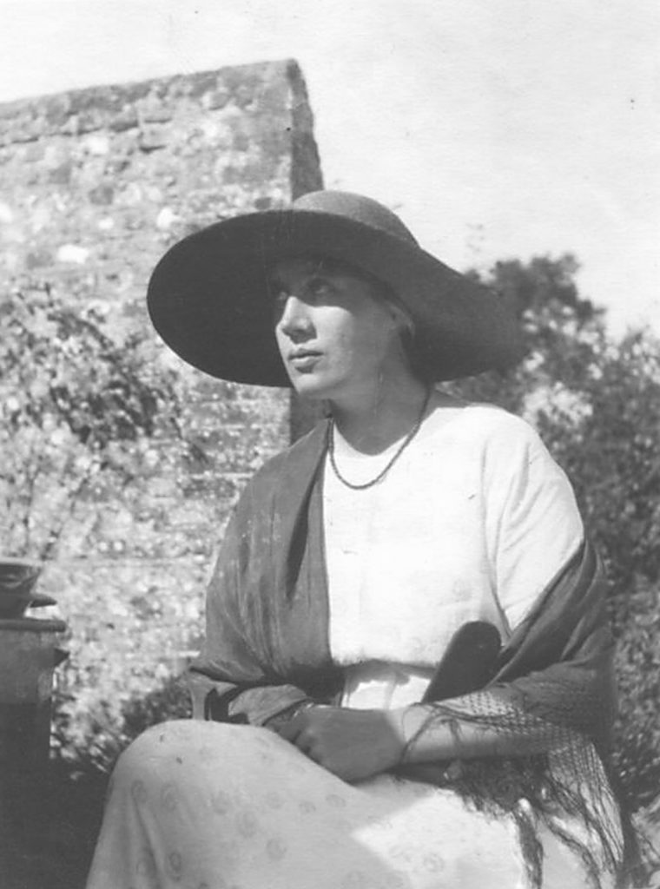
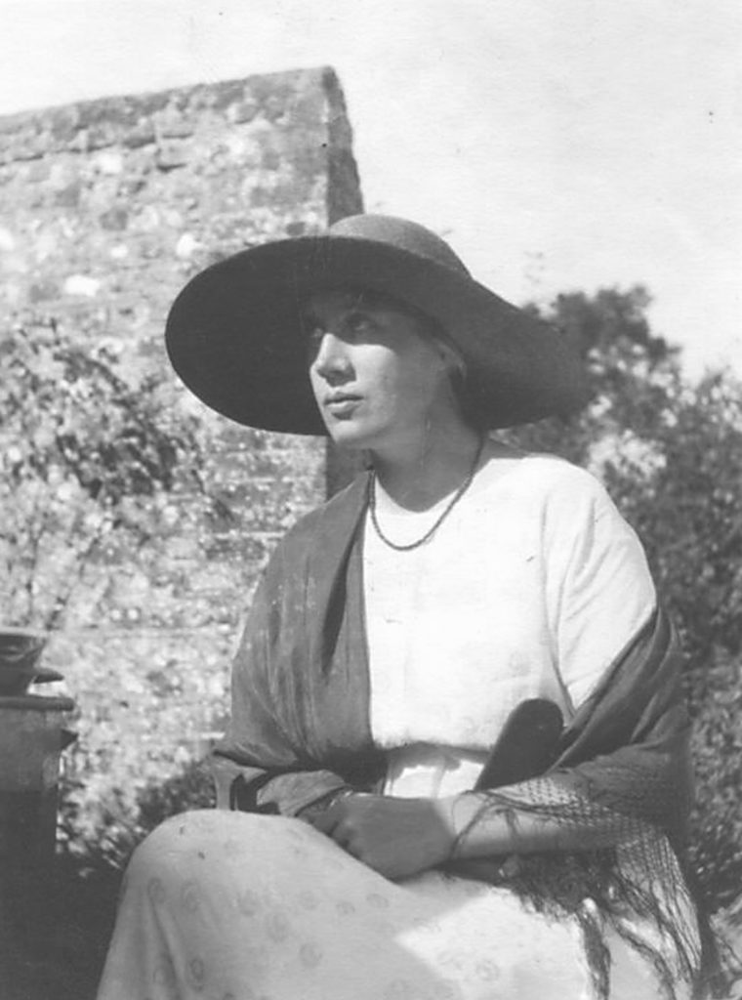

Hello,
This is the personal website of Dr Joshua Phillips. He does the following things:
- Researching
- Writing
- Editing & Proofreading
- Psychokinesis
- Professional amateur beatboxing
He also tries his best to make computers do things.
'Monday or Tuesday,' by Virginia Woolf (1921)
Lazy and indifferent, shaking space easily from his wings, knowing his way, the heron passes over the church beneath the sky. White and distant, absorbed in itself, endlessly the sky covers and uncovers, moves and remains. A lake? Blot the shores of it out! A mountain? Oh, perfect—the sun gold on its slopes. Down that falls. Ferns then, or white feathers, for ever and ever——
 

Desiring truth, awaiting it, laboriously distilling a few words, for ever desiring—(a cry starts to the left, another to the right. Wheels strike divergently. Omnibuses conglomerate in conflict)—for ever desiring—(the clock asseverates with twelve distinct strokes that it is midday; light sheds gold scales; children swarm)—for ever desiring truth. Red is the dome; coins hang on the trees; smoke trails from the chimneys; bark, shout, cry "Iron for sale"—and truth?
Radiating to a point men's feet and women's feet, black or gold-encrusted—(This foggy weather—Sugar? No, thank you—The commonwealth of the future)—the firelight darting and making the room red, save for the black figures and their bright eyes, while outside a van discharges, Miss Thingummy drinks tea at her desk, and plate-glass preserves fur coats——
Flaunted, leaf-light, drifting at corners, blown across the wheels, silver-splashed, home or not home, gathered, scattered, squandered in separate scales, swept up, down, torn, sunk, assembled—and truth?
Now to recollect by the fireside on the white square of marble. From ivory depths words rising shed their blackness, blossom and penetrate. Fallen the book; in the flame, in the smoke, in the momentary sparks—or now voyaging, the marble square pendant, minarets beneath and the Indian seas, while space rushes blue and stars glint—truth? or now, content with closeness?
Lazy and indifferent the heron returns; the sky veils her stars; then bares them.